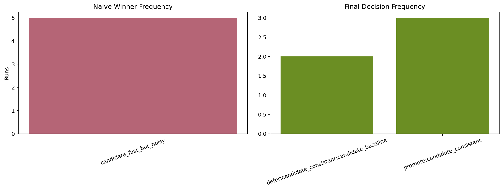
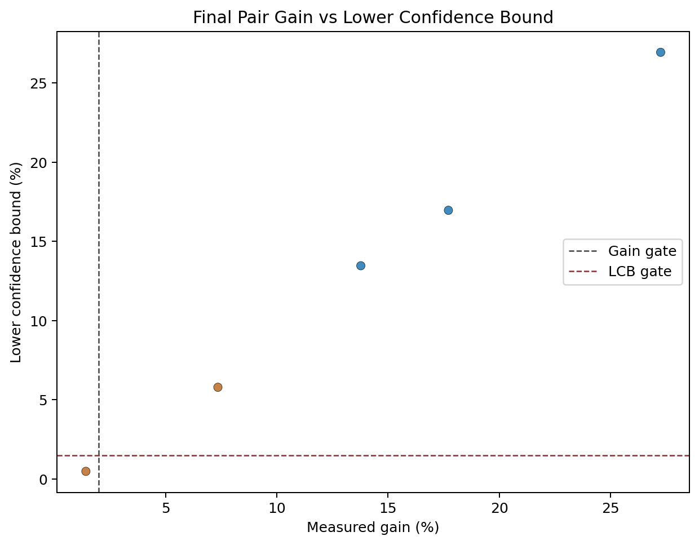
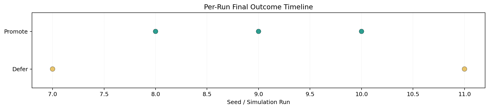

Noise-Aware Benchmark Simulation Summary
CPU-backed repeated-session simulation comparing naive raw-median selection against contamination-aware finalist reruns and promotion gating.
Plots



| runs | 5 |
|---|---|
| true_winner | candidate_consistent |
| naive_matches_true | 0 |
| naive_false_winners | 5 |
| final_promotes_true | 3 |
| final_false_promotions | 0 |
| defer_count | 2 |
| reject_count | 0 |
| promote_count | 3 |
| decision_disagreement_count | 5 |
| avg_final_winner_contamination_rate | 0.1225 |
| avg_final_lcb_pct | 12.7299 |
Per-Run Results
| Seed | Naive Winner | Decision | Final Winner | Final Loser | Gain % | LCB % |
|---|---|---|---|---|---|---|
| 7 | candidate_fast_but_noisy | defer:candidate_consistent:candidate_baseline | candidate_consistent | candidate_baseline | 1.418 | 0.481 |
| 8 | candidate_fast_but_noisy | promote:candidate_consistent | candidate_consistent | candidate_baseline | 13.778 | 13.466 |
| 9 | candidate_fast_but_noisy | promote:candidate_consistent | candidate_consistent | candidate_baseline | 27.258 | 26.946 |
| 10 | candidate_fast_but_noisy | promote:candidate_consistent | candidate_consistent | candidate_baseline | 17.716 | 16.966 |
| 11 | candidate_fast_but_noisy | defer:candidate_consistent:candidate_baseline | candidate_consistent | candidate_baseline | 7.353 | 5.791 |